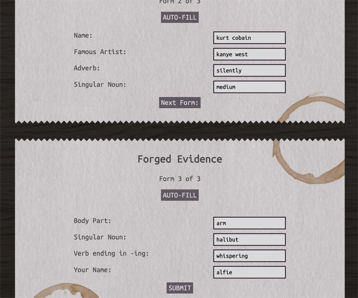

Summary
I did things a bit out of order, and did my user testing after coding the majority of my project. While this may have been unconventional, I’m glad I did, as I spotted issues that I wouldn’t have if I had tested in Figma. I found and addressed 2 main issues: new content being hidden below where the window scrolled, and grammar errors being transferred into the finished MadLibs.
User Testers
I asked two people to be user testers. Since the MadLibs is just a fun, small thing for everyone, I asked one fellow (non-design) student/friend and my mom to get a feel for how two people from different demographics would interact with the project.
Tasks
I only outlined one task for my user testers: complete the MadLib. To do this, users will have to click the ‘Let’s Get Started’ button, 3 ‘Next Form’ buttons, and fill out 12 inputs (or click 3 auto-fill buttons). During the time of the testing, they also had to scroll down between forms.
Results
I was pleased to see that, despite not knowing what a ‘MadLib’ was, my mom caught on just by reading the introduction (I think using the words ‘make up something’ there helped). The example inputs were helpful, as both my user testers admitted they didn’t know the exact definition of a superlative, they understood thanks to the grayed out sample in the box.
This is about the end of the things I did right, at least the first time. My mom was momentarily confused once the third form appeared, technically becoming visible, but just under where the browser was scrolled to. She figured it out quickly, but I understood that it was a small pain point that could be smoothed over if I implemented auto-scrolling (which I did.)

The second issue I noticed was that my friend didn’t capitalize proper nouns in the entry field, and that got transferred to the finished MadLibs. Specifically, he entered the name Kobe Bryant, Kanye West, and the word Saturday as ‘kobe bryant’, ‘kanye west’, and ‘friday’, and that’s how they appeared in the result Since I wanted to maintain the aesthetic of the finished MadLibs as a properly formatted newspaper article, I added a few lines of JavaScript to automatically capitalize the first letter of each word for names, (meaning ‘Kobe bryant’ would be corrected to ‘Kobe Bryant’ the final result) and the first letter singular proper nouns.